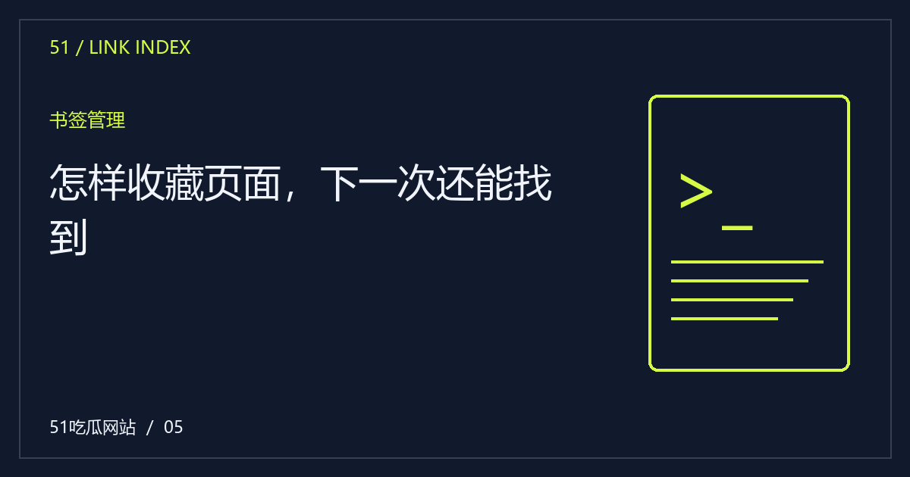

怎样收藏页面，下一次还能找到
收藏文章前，确认保存的是正文地址还是临时列表。给书签写一句自己的备注，比堆积重复标题更方便。

优先保存具体文章地址
首页和列表会随内容增加而变化，具体文章链接更适合长期回看。复制地址时先确认已经打开正文，而不是搜索筛选或栏目封面。对需要多篇一起阅读的主题，可以同时保存目录入口，分别标注“总览”和“具体方法”，避免混淆用途。
书签名称写清文章解决的问题
原标题可能较长，也可能只强调吸引人的部分。你可以在个人书签中改成自己更容易理解的名字，例如“截图时间怎样核对”。这不会修改网站内容，却能让以后搜索自己的收藏时更有效，也能减少重复保存同一篇文章。
跨设备同步先看浏览器设置
浏览器是否同步书签取决于自己的账户与设置，网站本身不一定提供同步功能。不要以为在手机收藏后，桌面上就必然出现相同记录。若不想使用账户同步，可以将一组公开文章地址保存为普通笔记，或通过系统分享功能转存。
失效链接要区分原因
一条书签打不开，可能是域名变化、文章路径调整或临时网络问题。先尝试从首页目录查找，再核对是否有迁移说明。不要随意改成搜索结果里的陌生地址并输入敏感信息。维护者应让旧路径有清晰处理，读者则保留原始链接便于反馈。回看“怎样收藏页面，下一次还能找到”这个问题时，可以保留自己的疑问与材料清单，先完成能够验证的部分，再处理需要等待的信息。对阅读方法的建议也应结合实际情况使用，不必把一种顺序当成所有场景的唯一答案。
编辑演示：本文用于展示专题阅读；虚构情境不构成真实人物或事件报道。
下一篇：站内链接很多，怎样分辨去向 →